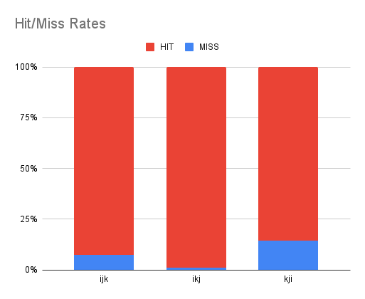

__C/C++ : a hardware perspective__
``` unsigned int a; unsigned int *b; b = &a; ```
Memory-mapped hardware


``` unsigned int *gpio_w1ts = (unsigned int*)(0x3FF44008); *gpio_w1ts = 1; // Set GPIO pin 0 HIGH // 1 = ......000001 *gpio_w1ts = 2; // Set GPIO pin 1 HIGH // 2 = ......000010 *gpio_w1ts = 4; // Set GPIO pin 2 HIGH // 4 = ......000100 ```
"I don't care about hardware. I'm not a computer/electronic engineer." -- _a CS scholar_
"I don't care about hardware. I'm not a computer/electronic engineer." -- _a CS scholar_ __You should if you care about performance.__
C/C++ gives us a lot of control over memory


Why is having control of memory management important?
Why is having control of memory management important? __Big difference in latency between HIT and MISS__


With C/C++ we have much more control over this memory hierarchy
Example: Matrix-Matrix Multiplication


 ``` float A[N][N]; float B[N][N]; float C[N][N]; ```
 ``` float A[N][N]; float B[N][N]; float C[N][N]; for(int i=0; i<N; i++) { for(int j=0; j<N; j++) { } } ```
 ``` float A[N][N]; float B[N][N]; float C[N][N]; for(int i=0; i<N; i++) { for(int j=0; j<N; j++) { for(int k=0; k<N; k++) { } } } ```
 ``` float A[N][N]; float B[N][N]; float C[N][N]; for(int i=0; i<N; i++) { for(int j=0; j<N; j++) { for(int k=0; k<N; k++) { C[i][j] += A[i][k] * B[k][j]; } } } ```
__Experiment__


Back to matrix-matrix multiplication

__order:__ i, j ,k _i=1, j=2, k=0..N_ 
__order:__ i, k, j _i=1, j=0..N, k=2_ 
__order:__ k, j, i _i=0..N, j=1, k=2_ 

 | | MISS | HIT | |-----|-------|-------| | ijk | 7.2% | 92.8% | | ikj | 0.9% | 99.1% | | kji | 14.3% | 85.7% |
With C/C++ we have __control__ over: * How we arrage our data in memory * How we iterate over our data ...comes with some responsibility

C/C++ can describe hardware 
__conclusion__ * C/C++ isn't going anywhere...

__conclusion__ * C/C++ isn't going anywhere... * Pointers are essential for interfacing with hardware

__conclusion__ * C/C++ isn't going anywhere... * Pointers are essential for interfacing with hardware * Explicit memory management is powerful

__conclusion__ * C/C++ isn't going anywhere... * Pointers are essential for interfacing with hardware * Explicit memory management is powerful * C/C++ can describe custom hardware